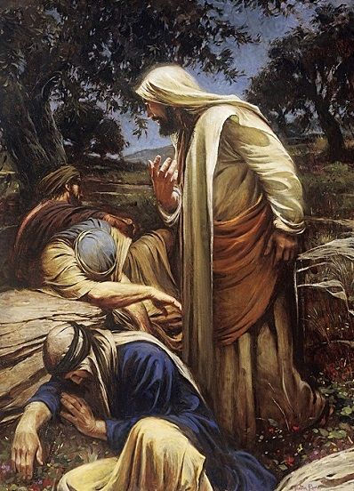

1. The Agony
Bloody Sweat
After the Last Supper, Jesus goes to the Garden of Gethsemane. He separates to pray.
Faced with the weight of human sin, Jesus felt intense sorrow and fear. His sweat became like drops of blood (Luke 22:44).
This internal agony was the first sacrifice of the Passion.

The Cup
‘Father, let this cup pass if possible’ (Mt 26:39)
His disciples fall asleep
‘Father, not My will, but Yours be done.’
Life Lesson
Pray in your hardest moments
It’s okay to feel weak
Choose God’s will anyway
Swipe for more →